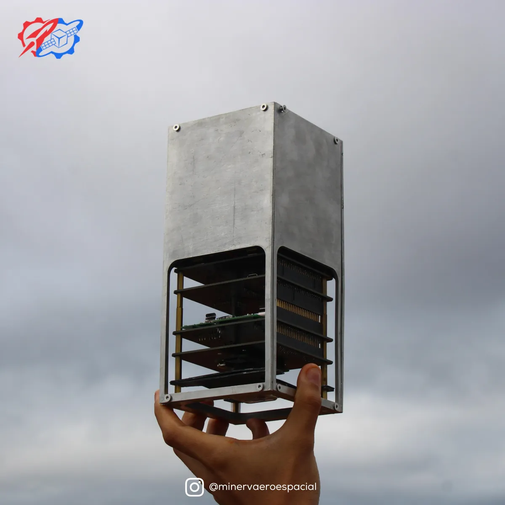
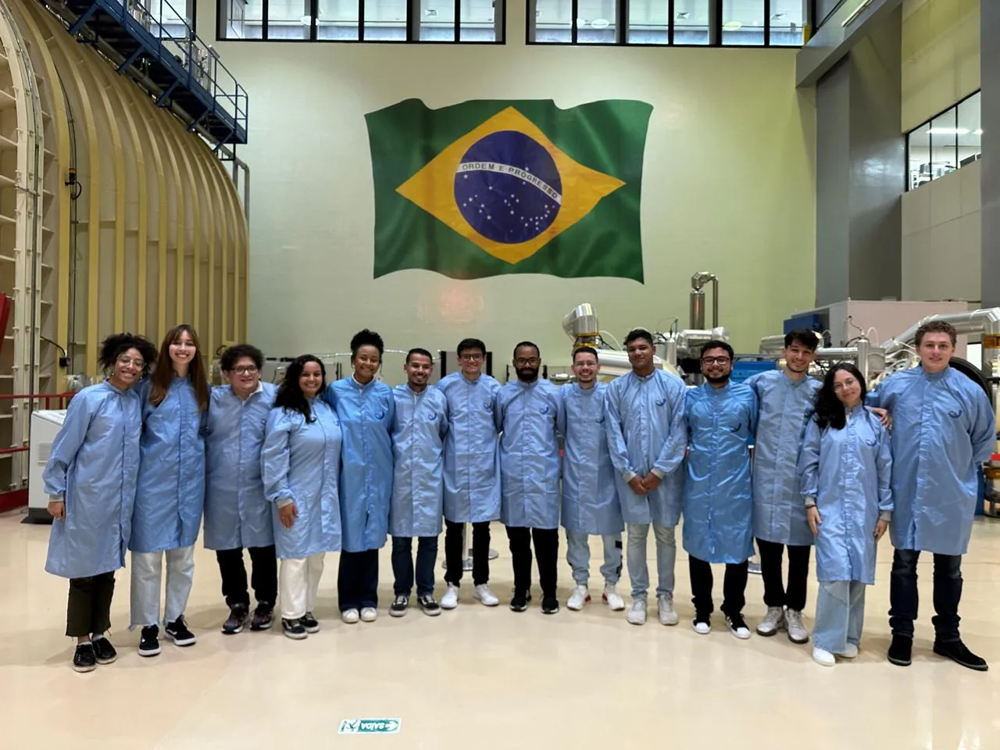
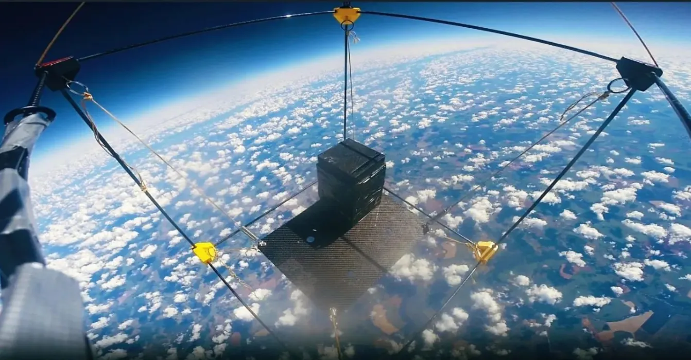

Minerva Sats
Minerva Sats
Satélites
feitos por estudantes
A Minerva Sats concebe, desenvolve e opera satélites estudantis e representa a UFRJ em desafios e competições acadêmicas pelo mundo.


Missão atual
CariocaSat
O primeiro satélite inteiramente carioca a chegar ao espaço.
Em 2025, a plataforma alcançou TRL 5. Em 2026, a meta é chegar ao TRL 6: qualificar a plataforma em ambiente relevante e prepará-la para integração em lançamento orbital.
2025TRL 5 — validação em laboratório
2026Meta: TRL 6
RadiaçãoMitigação de falhas por radiação ionizante
TérmicoResistência a ciclos térmicos extremos
MecânicoQualificação a vibração e choque
Missões anteriores
Nossos satélites
Como a equipe se organiza
Subequipes da Minerva Sats
Cada subequipe tem gerente e membros dedicados. Abra um cartão para ver quem está nela.
Histórico
Conquistas
Pódios na LASC, na Olimpíada Brasileira de Satélites e na INPE CubeDesign, além de produção científica constante.

Coloque sua marca em órbita
O CariocaSat precisa de parceiros para chegar ao TRL 6 e ao lançamento orbital.